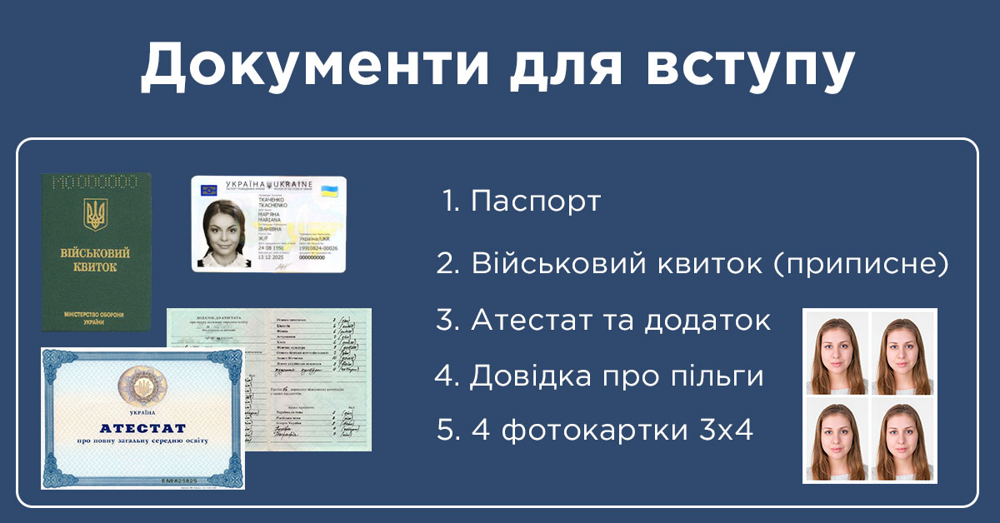

Приватний навчальний заклад
Для вступу до нашого приватного навчального закладу "Knowledge" потрібно дотримуватися певних правил прийому. Ось декілька основних критеріїв, які потрібно виконувати:
1. Здача вступних іспитів: Для вступу до нашого університету потрібно скласти вступні іспити з тих предметів, які обираєте для навчання. Вступні іспити проводяться з урахуванням вимог відповідної факультету.
2. Пред'явлення документів: Для вступу до університету потрібно пред'явити оригінали документів про повну загальну середню освіту (або відповідного іноземного документа), сертифікат про здобуття права на вступ до вищого навчального закладу та інші документи, які можуть бути вимогами факультету.
3. Особисті якості: Наш університет не тільки оцінює знання та академічні досягнення аплікантів, але також звертає увагу на їх особисті якості. Апліканти повинні мати хорошу мотивацію для навчання, здатність до самостійної роботи та співпраці в команді.
4. Додаткові вимоги факультету: Кожен факультет може мати свої додаткові вимоги для вступу. Наприклад, це може бути складання вступних іспитів з певних предметів, або виконання творчого завдання для вступу на спеціальності, пов'язані з мистецтвом та дизайном.
Ми надаємо можливість отримати вищу освіту на високому рівні, тому дотримання вимог до прийому є важливим кроком для досягнення успіху в навчанні та майбутньому професійному житті.
Якщо у вас виникли питання, зв'яжіться з нами.
Зв'язатися